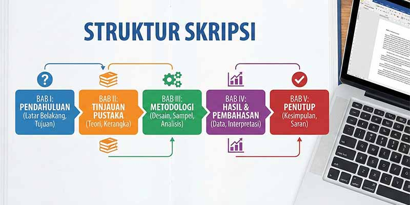

Mencetak skripsi tidak bisa asal. Setiap kampus biasanya memiliki aturan format baku. Artikel ini akan memandu Anda mengenai format umum yang sering digunakan, sehingga hasil cetak rapi dan tidak ditolak oleh bagian akademik.
1. Ukuran Kertas
Umumnya skripsi menggunakan kertas A4 (21 x 29,7 cm). Pastikan pengaturan kertas di Word atau editor lain sudah diset ke A4.
2. Margin
Margin standar yang sering digunakan:
- Kiri : 4 cm (untuk tempat jilid)
- Kanan : 3 cm
- Atas : 3 cm
- Bawah : 3 cm
Beberapa kampus menggunakan margin kiri 3,5 cm dan kanan 2,5 cm. Cek panduan kampus masing-masing.
3. Jenis dan Ukuran Font
- Font: Times New Roman atau Arial
- Ukuran: 12 pt untuk teks utama, 10-11 pt untuk kutipan atau catatan kaki
- Spasi: 1,5 atau 2 (sesuai ketentuan)
4. Penomoran Halaman
Bagian awal (abstrak, daftar isi, dll) menggunakan angka romawi kecil (i, ii, iii). Bagian inti (bab) menggunakan angka arab (1,2,3) dengan posisi kanan atas atau tengah bawah.
5. Warna Cetak
Umumnya skripsi dicetak hitam putih untuk menghemat biaya, namun beberapa halaman seperti gambar atau grafik mungkin perlu dicetak warna. Di MedanPrint, kami menyediakan opsi campuran hitam putih dan warna dalam satu dokumen.
6. Jenis Jilid
Ada dua jenis jilid yang umum: softcover (laminasi panas) dan hardcover (keras). Softcover lebih ekonomis, hardcover lebih kokoh. Konsultasikan dengan kampus Anda.
Dengan mengikuti format di atas, skripsi Anda siap dicetak. Jika ragu, hubungi kami untuk pengecekan file sebelum cetak.